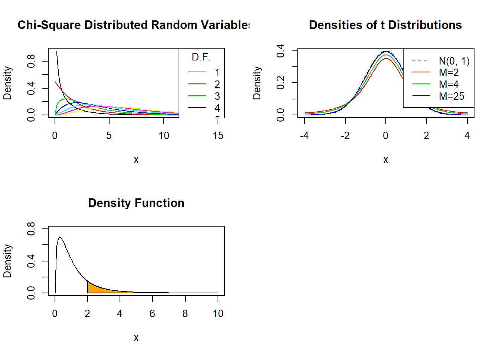
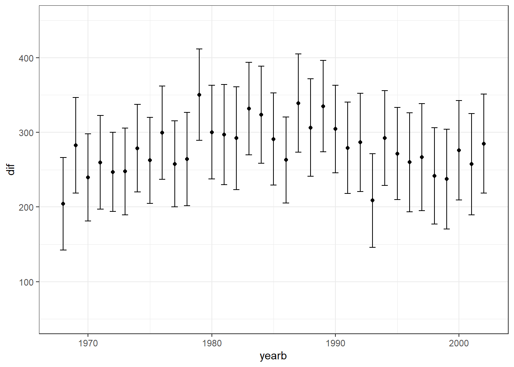

7 Lecture notes, updates, and corrections:
7.1 Week1D2
Define a binary random variable \(Y\) for flipping a fair coin. Calculate the expected value and the variance. Flip the the coin for \(\times 10\) and \(\times 10000\), calculate the sample mean and sample variance.
## [1] "H"## [1] "H" "H" "T" "T" "T" "H" "H" "T" "T" "T"#create the random variable Y
out1 <- sample(coin,10, replace=TRUE)
Y1 <- as.data.frame(out1)
Y1$val <- 0
Y1$val[Y1$out1=="T"] <- 1
out2 <- sample(coin,10000, replace=TRUE)
Y2 <- as.data.frame(out2)
Y2$val <- 0
Y2$val[Y2$out2=="T"] <- 1
mean(Y1$val)## [1] 0.3## [1] 0.2333333## [1] 0.5066## [1] 0.24998147.2 Week2D1
If \(Y \sim N(1,4)\), standardize Y, interpret and calculate \(Pr \leq 2\) Find the upper and lower tail range that yield 95% probability within the interval of these two values. Calculate \(Pr(1\leq Y \leq 2)\).
## [1] 0.6914625## [1] 0.1914625## [1] -2.919928## [1] 4.919928Generate normally distributed random variables and variable with chi-squared
#x1 is a normally distributed RV
x1 <- rnorm(100000,0,1)
#x2 is a normally distributed RV
x2 <- rnorm(100000,0,1)
#z1 is the square of x1
z1 <- x1^2
#z2 is the sum of squared xs
z2 <- x1^2 + x2^2
par(mfrow=c(2,2))
hist(x1, prob=TRUE)
hist(x2, prob=TRUE)
hist(z1, prob=TRUE)
hist(z2, prob=TRUE)
# plot the density for M=1
curve(dchisq(x, df = 1),
xlim = c(0, 15),
xlab = "x",
ylab = "Density",
main = "Chi-Square Distributed Random Variables")
# add densities for M=2,...,7 to the plot using a 'for()' loop
for (M in 2:7) {
curve(dchisq(x, df = M),
xlim = c(0, 15),
add = T,
col = M)
}
# add a legend
legend("topright",
as.character(1:7),
col = 1:7 ,
lty = 1,
title = "D.F.")
# plot the standard normal density
curve(dnorm(x),
xlim = c(-4, 4),
xlab = "x",
lty = 2,
ylab = "Density",
main = "Densities of t Distributions")
# plot the t density for M=2
curve(dt(x, df = 2),
xlim = c(-4, 4),
col = 2,
add = T)
# plot the t density for M=4
curve(dt(x, df = 4),
xlim = c(-4, 4),
col = 3,
add = T)
# plot the t density for M=25
curve(dt(x, df = 25),
xlim = c(-4, 4),
col = 4,
add = T)
# add a legend
legend("topright",
c("N(0, 1)", "M=2", "M=4", "M=25"),
col = 1:4,
lty = c(2, 1, 1, 1))
# define coordinate vectors for vertices of the polygon
x <- c(2, seq(2, 10, 0.01), 10)
y <- c(0, df(seq(2, 10, 0.01), 3, 14), 0)
# draw density of F_{3, 14}
curve(df(x ,3 ,14),
ylim = c(0, 0.8),
xlim = c(0, 10),
ylab = "Density",
main = "Density Function")
# draw the polygon
polygon(x, y, col = "orange")
# Vector of outcomes
S <- 2:12
# Vector of probabilities
PS <- c(1:6, 5:1) / 36
# divide the plotting area into one row with two columns
par(mfrow = c(1, 2))
# plot the distribution of S
barplot(PS,
ylim = c(0, 0.2),
xlab = "S",
ylab = "Probability",
col = "white",
space = 0,
main = "Sum of Two Dice Rolls")
# plot the distribution of D
probability <- rep(1/6, 6)
names(probability) <- 1:6
barplot(probability,
ylim = c(0, 0.2),
xlab = "D",
col = "white",
space = 0,
main = "Outcome of a Single Dice Roll")## [1] 6 1 5 1 5 2 4 6 3 3# perform random sampling
samples <- replicate(reps,sample(1:6,n,replace=TRUE)) # 10 x 10000 sample matrix
# compute sample means
sample.avgs <- colMeans(samples)
hist(sample.avgs, freq=FALSE)
hist((sample.avgs-3.5)/sqrt(2.91/n), freq=FALSE)
curve(dnorm(x, sd = 1),
col = "red",
lwd = "2",
add = T)
7.3 Week2D2
- Handout answer Q2 (h-l)
# Generate the data for coin experiment
n <- 100
n1 <- 61
n2 <- 39
#create the data of 100 obs with 61=1 and 39=0
df1 <- as.data.frame(c(rep(1,n1),rep(0,n2)))
names(df1) <- "Y"
#scramble so it looks random
df1$Y <- sample(df1$Y)
View(df1)
df1$Y.bar <- mean(df1$Y)
df1$sq.dev <- (df1$Y - df1$Y.bar)^2
sample.mean <- mean(df1$Y)
sample.var <- sum(df1$sq.dev)/(n-1)
sample.std <- sqrt(sample.var)
sample.se <- sample.std/sqrt(n)
mean(df1$Y)## [1] 0.61## [1] 0.240303## [1] -2.243949## [1] 0.02706281## [1] -1.984217##
## One Sample t-test
##
## data: df1$Y
## t = 2.2439, df = 99, p-value = 0.02706
## alternative hypothesis: true mean is not equal to 0.5
## 95 percent confidence interval:
## 0.5127323 0.7072677
## sample estimates:
## mean of x
## 0.61lb95<- sample.mean + qt(0.025, n-1, lower.tail = TRUE)*sample.se
ub95<- sample.mean - qt(0.025, n-1, lower.tail = TRUE)*sample.se
print(c(lb95,ub95))## [1] 0.5127323 0.70726777.4 Week3D1
df1 <- read.csv("https://www.dropbox.com/s/c9aj0kjftso7qzi/birth19682002.csv?dl=1") %>%
filter(bwei<9000 & is.na(bwei)==FALSE)
df2 <- df1[df1$yearb==1968 & df1$race3=='black', ]
df3 <- df2[df1$yearb==1968 & df1$race3=='white', ]
black.mean.1968 <- mean(df2$bwei, na.rm = TRUE)
black.var.1968 <- var(df2$bwei, na.rm = TRUE)
white.mean.1968 <- mean(df3$bwei, na.rm = TRUE)
white.var.1968 <- var(df3$bwei, na.rm = TRUE)
race.gap.1968 <- white.mean.1968 - black.mean.1968
race.gap.1968.se <- sqrt((black.var.1968/447) + (white.var.1968/2462))
race.gap.1968.ub <- race.gap.1968 + (1.96*race.gap.1968.se)
race.gap.1968.lb <- race.gap.1968 - (1.96*race.gap.1968.se)
res <- c(black.mean.1968,white.mean.1968,race.gap.1968, race.gap.1968.lb, race.gap.1968.ub )
print(round(res,0))## [1] 3090 3231 141 81 201## mean of x mean of y
## 3324.193 3089.745## [1] 29.44446## [1] 176.5824 292.3142
## attr(,"conf.level")
## [1] 0.95df4 <- df1 %>%
filter(race3!='oth') %>%
dplyr::select(yearb,bwei,race3) %>%
group_by(race3,yearb) %>%
summarise_each(funs(mean,n(),sd,se=sd(.)/sqrt(n())))
df5 <- cbind(df4[df4$race3=='black',], df4[df4$race3=='white',] ) %>%
mutate(dif=mean1-mean) %>%
mutate(dif.se=sqrt((sd1^2/n1 + sd^2/n))) %>%
ggplot(aes(x=yearb,y=dif)) +
geom_point() +
geom_errorbar(aes(ymin=dif-1.96*dif.se, ymax=dif+1.96*dif.se), width=0.5) +
theme_bw() +
ylim(c(50,450))
df5